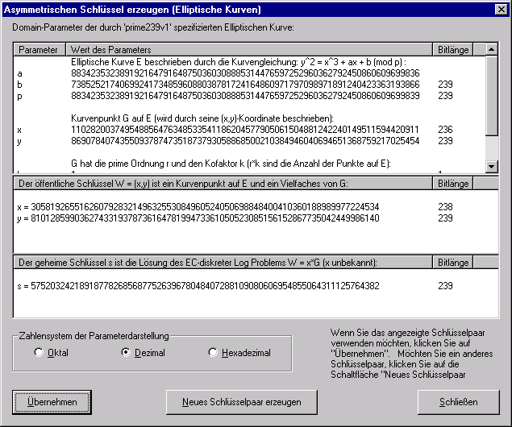

Zu diesem Dialog gelangt man nur, wenn man im Dialogfenster Erzeugen eines asymmetrischen Schlüsselpaares die Option Anzeigen des erzeugten Schlüsselpaares aktiviert und neue Schlüssel für Elliptische Kurven erzeugt hatte.
Die in dem Dialog Erzeugen eines asymmetrischen Schlüsselpaares gewählten Domain-Parameter kann man hier nicht mehr ändern. Lediglich den öffentlichen und den geheimen Schlüssel kann man durch Betätigen der Schaltfläche Neues Schlüsselpaar erzeugen solange wählen, bis man mit den Schlüsseln zufrieden ist. Dabei ist zu beachten, dass nur das aktuell angezeigte Schlüsselpaar durch Drücken von Übernehmen gespeichert werden kann, das heißt es gibt keine Möglichkeit, ein Schlüsselpaar, das vorher angezeigt worden war, und das man durch Drücken von Neues Schlüsselpaar erzeugen gelöscht hat, wieder zurückzuholen.
